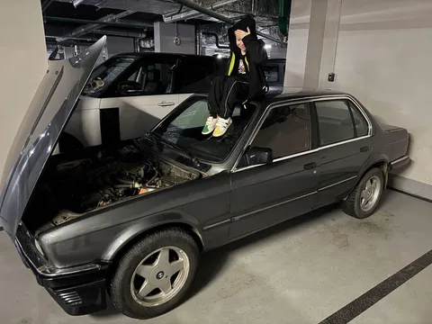

Моему сыну почти 8 лет. И я хочу проводить с ним больше времени осмысленно, а собирать лего мне уже не очень интересно. Нужно было найти какое-то общее хобби, вокруг которого мы с ним сможем крутиться. Недавно сын начал интересоваться машинами - уже различает марки и типы кузовов, спрашивает об их устройстве. И я решил, что пришло время прививать ребенку чувство прекрасного.
В связи с этим был приобретен учебно-тренировочный кадавр в лице BMW 3er E30 1984 года выпуска на трамблерном M20B20 с ле-джетроником. Теперь мы можем по выходным на паркинге с ним ковыряться. Цель - сделать к лету конфетку. Хотя, цель тут - не главное, главное - процесс. Буду рассказывать сыну, как оно устроено, на практике. Будем учиться крутить гайки, чинить, улучшать, разбирать и собирать.
Почему E30? Во-первых, это красиво. Выдержанный признанный янгтаймер в классическом строгом стиле не оставляет равнодушным никого вокруг. Ну как минимум в хорошем состоянии, а это уже - наша забота. Во-вторых, максимальная ремонтопригодность. Купить машину и загнать ее в сервак на полгода - не интересно, а ковырять более современные машины в домашних условиях - дохлый номер. Мы даже отмели вариант с 2.5-мотором, потому что с ним подкапотка очень тесная, не подлезть.
Когда мы с сыном вернулись домой с "шоппинга", он взахлеб рассказывал маме о том, какая в этой машине прикольная система опускания стекол - представляете, там есть такая ручка, которую надо крутить! Да, ребенок впервые увидел "весла"...
Проект затевается как восстановительный (исторически-достоверный) с элементами стилистических улучшений. Музейный экспонат или рестомод делать не планируем, шпрот-корч - тоже не наш вариант. Должна получиться максимально аккуратная машинка, на которой можно раздавать стиля. Планов по ней уже громадье, но о них - в следующих выпусках.
#лёха_строит_бэху
